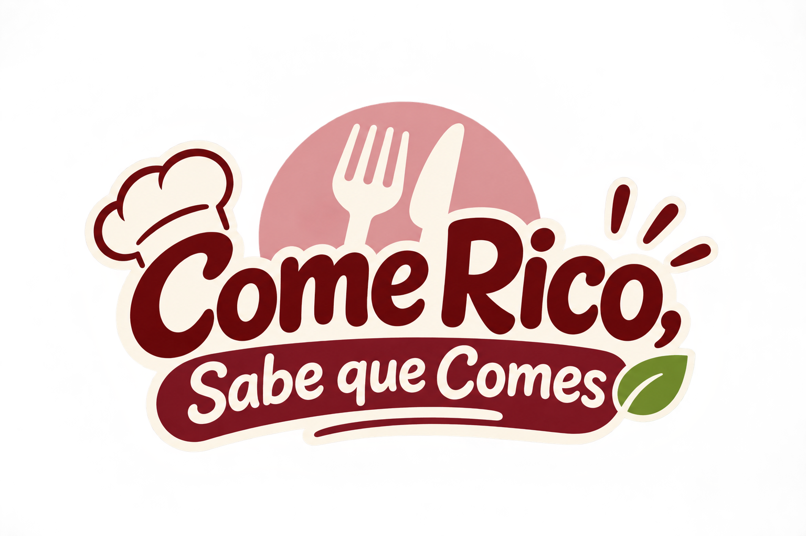
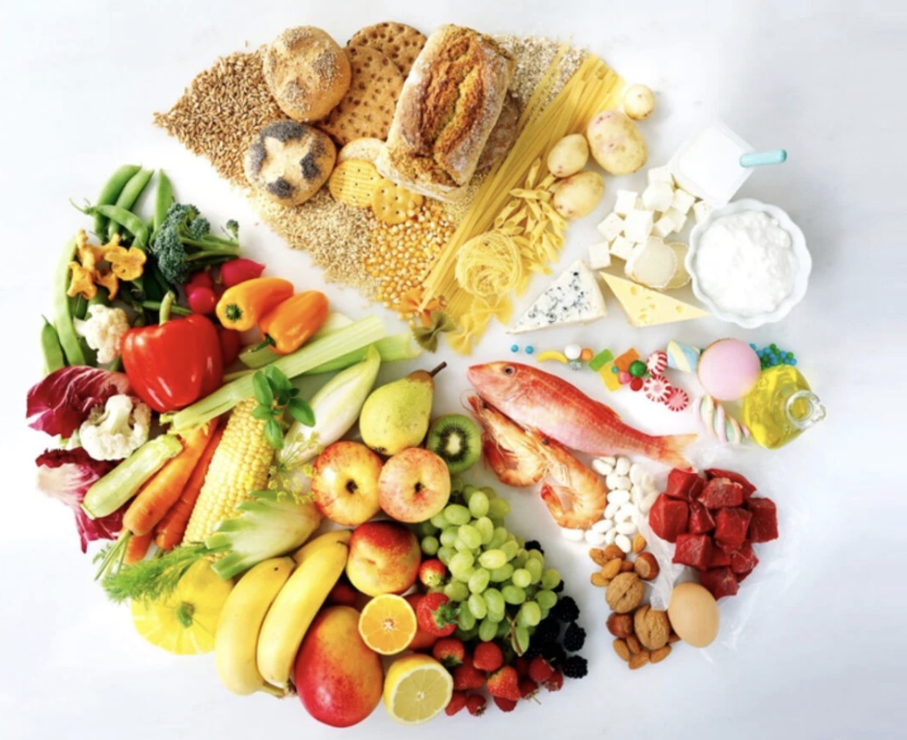
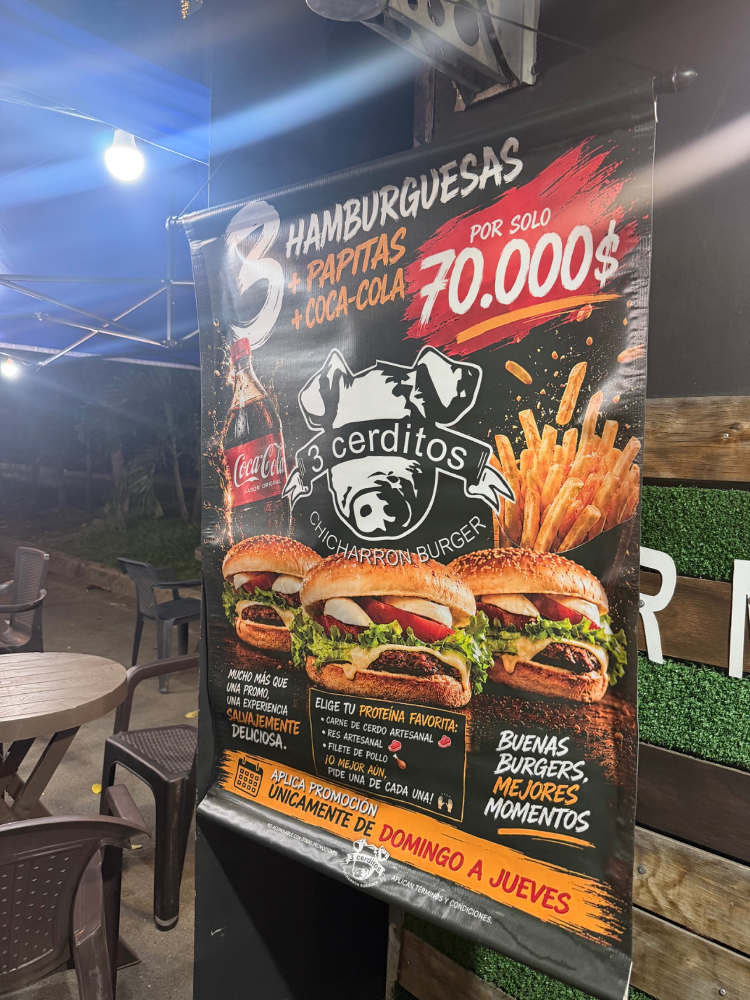
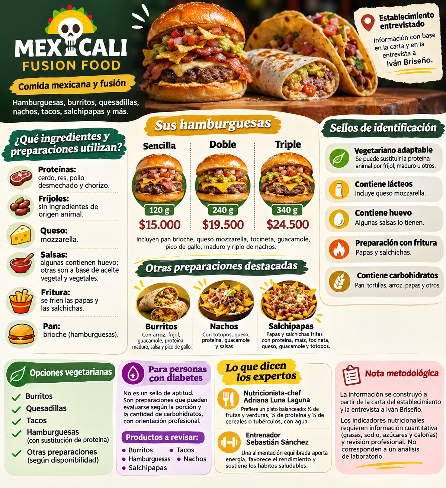
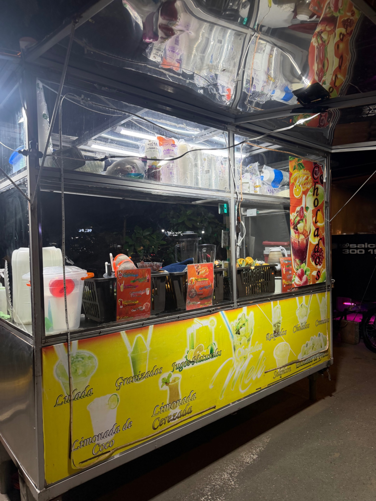
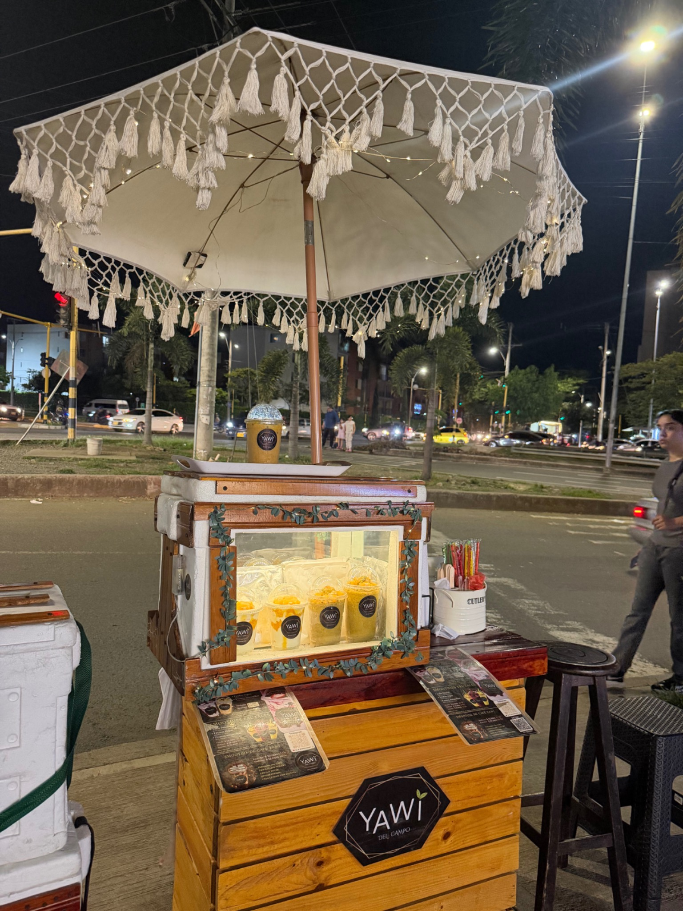
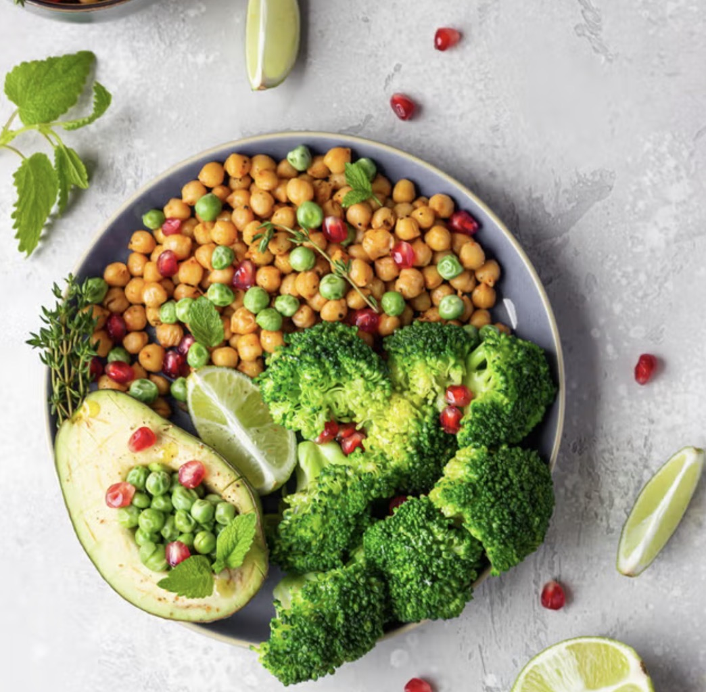
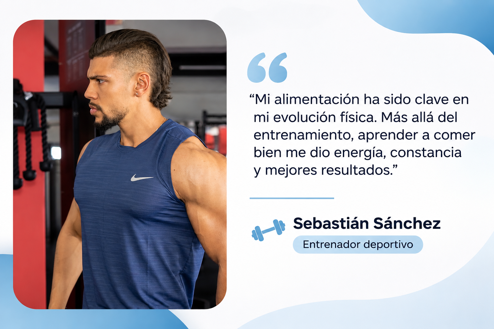

ENTRE CLASES
El almuerzo que resuelve el día
Cuando el tiempo es corto, conocer ingredientes, preparaciones y porciones puede ayudar a comparar alternativas.

ESPECIAL PERIODÍSTICO · CALI, COLOMBIA
¿Cómo elegir lo que comemos cuando estamos entre clases, estudiando o terminando el día?
Un recorrido por la oferta gastronómica y las decisiones alimentarias de jóvenes en Bochalema y Cachipay.
Explorar el reportaje ↓
En la rutina universitaria, la comida aparece entre una clase y otra, durante una jornada larga o al final de un parcial.
Este especial observa qué información ofrecen algunos establecimientos de Bochalema y Cachipay y qué puede tener en cuenta un estudiante al momento de elegir. No se trata de señalar qué negocio es bueno o malo, sino de hacer más visible la información disponible.
ENTRE CLASES
Cuando el tiempo es corto, conocer ingredientes, preparaciones y porciones puede ayudar a comparar alternativas.
DESPUÉS DEL PARCIAL
La elección también está atravesada por el presupuesto, el hambre, la disponibilidad y las costumbres.
EN LA TARDE
En bebidas y postres conviene preguntar por ingredientes, endulzantes, tamaños y posibles modificaciones.
La información de cada perfil debe leerse junto con la carta y lo conversado con el establecimiento. Las declaraciones corresponden a sus fuentes.
Una de las paradas del recorrido gastronómico. Consulta la carta y pregunta por las proteínas, acompañamientos, salsas y métodos de preparación disponibles.
Comida rápida
Su oferta incluye hamburguesas, burritos, quesadillas, nachos, tacos y otras preparaciones de inspiración mexicana.
Comida mexicana y fusión
Una propuesta de bebidas y preparaciones dulces. Para conocer mejor cada producto, pregunta por sus ingredientes, jarabes, frutas y tamaño de porción.
Bebidas y postres
Otro de los establecimientos incluidos en el recorrido. La información específica de sus productos se ampliará con la carta y la entrevista correspondiente.
Bebidas y oferta local
Las fotografías de Cholados Meli y YAWI se asignaron según la identificación confirmada por la autora del proyecto.
Una referencia compartida por la especialista entrevistada propone distribuir el plato en mitad de frutas y verduras, una cuarta parte de proteína y una cuarta parte de cereales o tubérculos, acompañándolo con agua.
Es una orientación general, no una regla universal ni una recomendación médica individual. Las necesidades cambian según cada persona.

FICHA VISUAL
Esta ficha reúne información reportada para Mexicali Fusion Food a partir de la carta y la entrevista. No equivale a un análisis de laboratorio.

SEBASTIÁN SÁNCHEZ · ENTRENADOR DEPORTIVO
Escucha el testimonio incluido en el proyecto.
El audio se presenta como material de entrevista. La cita gráfica debe cotejarse con la grabación original antes de publicarse como transcripción literal.
Pregunta por salsas, aderezos, bebidas y componentes que no sean evidentes.
Consulta si se cocina a la plancha, al horno, frito o mediante otra preparación.
Pregunta si es posible cambiar, retirar o sustituir algún ingrediente.
Conocer la porción ayuda a entender mejor lo que se está comprando.
Este especial se construye a partir de visitas, cartas de establecimientos y entrevistas a fuentes humanas. La información debe distinguir entre:
Los indicadores nutricionales no son sellos oficiales ni resultados de laboratorio. Este contenido es informativo y no reemplaza la orientación de un profesional de salud.
La IA puede equivocarse. Verifica los datos con las fuentes originales.